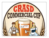

You are a part of the community you serve. And so are we. That's why we make it our mission to encourage our members to take an active role in seasonal initiatives to people in need. Or to attend Annual Dinners that not only celebrate our industry but strengthen our bonds of friendship.
Networking is also a top priority, allowing members to interact with new opportunities. Seek out knowledgeable advice. Or just receive some well deserved encouragement.
In fact, we're involved in over 50 events a year…from educational seminars and conferences to social gatherings and casual get-togethers. Each with ample opportunity for you, or your company, to participate in active sponsorship.
Connect …Contribute…Be Involved!
Charity Golf Tournament on October 1
The Annual Charity Golf Tournament supports SDAR's Ambassadors Foundation, which is is committed to supporting local San Diego charities. Save the date for October 1, 2013 to head out to Crosby National Golf Club and enjoy fun in the sun, while supporting a good cause! More informationCRASD Presents: Oktoberfest 2013 & "CRASD Commercial Cup"
Join us for a fun-filled Oktoberfest Celebration. Network while you enjoy great craft brews and food from the best food trucks in San Diego! "CRASD Commercial Cup" Competition San Diego's Most Coveted Piece of Commercial Real Estate 30 Teams of 2 will be competing to win the CRASD Commercial Cup. Play against competitors from San Diego's top commercial firms. Last team standing wins! Click here to register.Nominate a Colleague for SDAR's Awards of Excellence
Nominate a colleague who epitomizes outstanding service to SDAR and the industry, in the area of Broker, REALTOR®, Office Manager, and Affiliate of the Year for 2013. The deadline to submit nominations is October 25. Finalists will be announced in December, with winners recognized at the SDAR Installation in January. For the online nomination form, click here.Volunteers Sought for San Diego Film Festival Oct. 2-6
The upcoming San Diego Film Festival has opportunities that span across the festival – from concierge services, to set-up and support at the screening venues, to handling VIP lounges and special gatherings. For more information, visit www.sdfilmfest.com/volunteer/opportunities and click on the form to indicate your interest and availability. If you have any questions, e-mail volunteer@sdfilmfest.com.Thirsty Thursday with Young Professionals
Get ready for a great year and expand your networks by joining SDAR’s Young Professionals Network (YPN) for happy hour from 5:00 pm - 7:00 pm. Enjoy light appetizers, happy-hour pricing, and great company at these new, casual mixers hosted monthly. To register online and for location details visit, YPNThirstyThursday.eventbrite.com.Broker Circle Held Monthly at Various SDAR Service Centers – For Brokers Only
 SDAR will host free Broker Circle mixer events each month at our various service centers throughout the county. Gather and exchange best business practices, ideas, information, and lessons learned. To register online, and for more details including upcoming dates and locations, click here.
SDAR will host free Broker Circle mixer events each month at our various service centers throughout the county. Gather and exchange best business practices, ideas, information, and lessons learned. To register online, and for more details including upcoming dates and locations, click here. Sponsorship opportunities are available for all of our events. Send us an email to sales@sdar.com for more information.
Sponsorship opportunities are available for all of our events. Send us an email to sales@sdar.com for more information.